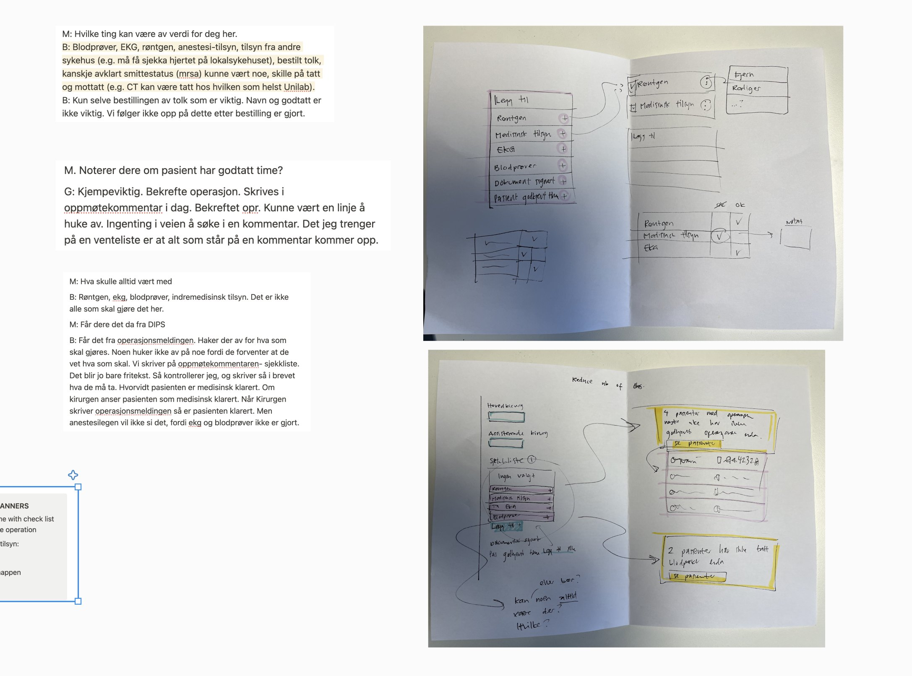
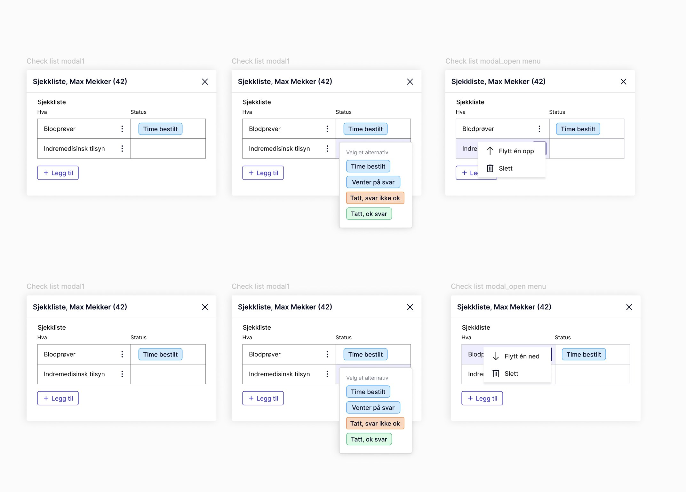
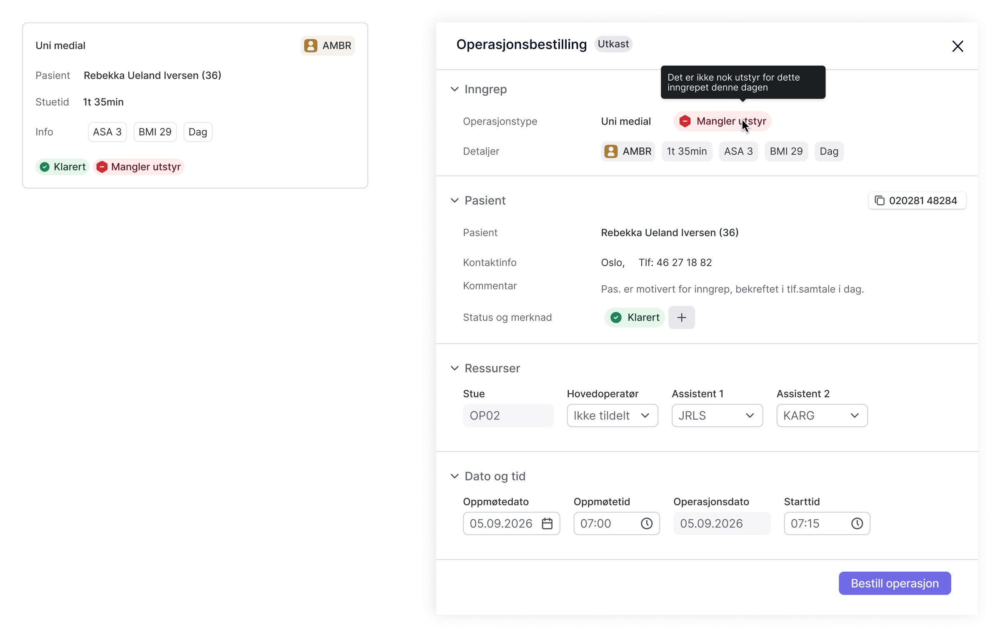
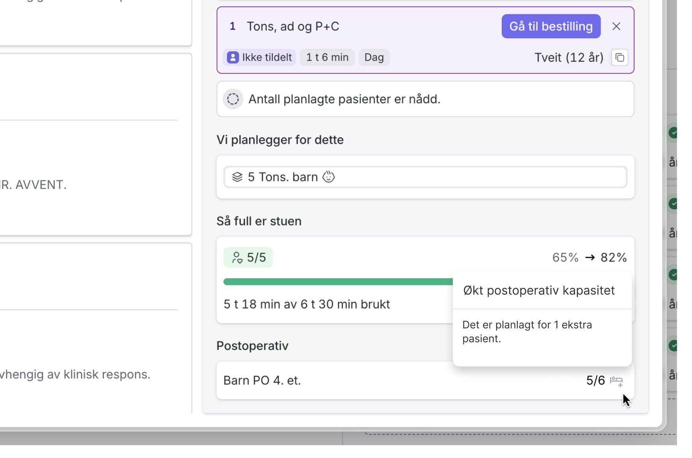

Deepinsight
Fra den første oversikten over pasienter som venter på operasjon, til detaljert informasjon og støtte i pasientbooking.
- Rolle
- Senior produktdesigner
- Ansvar
- Brukerinnsikt, konsept, interaksjonsdesign, prototyping, testing
- Varighet
- 3 år
- År
- 2024–i dag
Hos Deepinsight jobber jeg med verktøy for planlegging av operasjoner på sykehus. Brukerne er både de som jobber med pasientkoordinering, og de som har overordnet ansvar for drift og kapasitet.
Det første jeg jobbet med, var å bygge en oversikt over pasienter som venter på operasjon. Avdelinger og personer hadde tidligere holdt oversikt på ulike måter, og laget egne systemer for å sortere ut informasjonen som var viktig for dem. Gjennom intervjuer, observasjoner og brukertesting, og med integrasjon mot DIPS, fikk vi ut en løsning som viste ekte data fra første versjon.
Videre har jeg jobbet med å sette opp helhetlige, gode operasjonsdager. Her skal planleggerne stå fritt til å velge pasienter selv, men ha god oversikt over når valget vil påvirke tilgjengeligheten av ressurser eller utstyr.
Løsningen gir nå 22 % flere operasjoner på sykehuset og over 10 % økt stueutnyttelse. Resultatene kommer av arbeidet hele selskapet har gjort over tid.


Skisser fra konseptarbeid, og prototype jeg brukte under brukertesting med planleggerne.


Planleggerne velger pasienter selv og ser hvordan valget påvirker ressurser og utstyr når de bestiller. Gjennomføres en bestilling som overskrider kapasiteten, vises det i etterkant på relevante flater. Det samme gjelder når man i tidlig planlegging har åpnet for flere pasienter på sengepost.